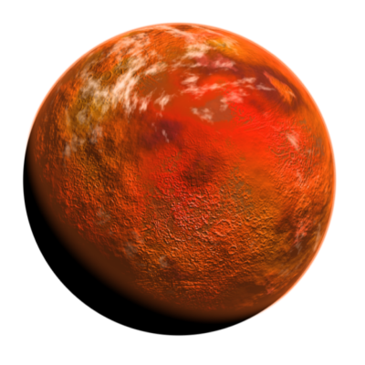
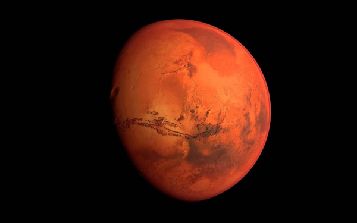
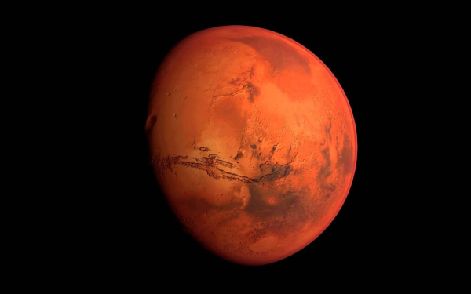

Марс


Марс — четвертая планета от Солнца — пыльный, холодный, пустынный мир с очень тонкой атмосферой. Марс также является динамичной планетой со сменой времен года, полярными ледяными шапками, каньонами, потухшими вулканами и свидетельствами того, что в прошлом он был еще более активен. Марс, красная планета, является седьмой по величине планетой в нашей Солнечной системе. Марс составляет примерно половину ширины Земли, а его экваториальный диаметр составляет около 6792 километра. Марс вращающается на среднем расстоянии 227,9 миллиона километров и находится примерно на 79 миллионов километров дальше от Солнца, чем Земля.
Интересные факты:
- На Марсе находится самая высокая гора в Солнечной системе, Олимп, высотой около 22 километров.
- В 2012 году робот NASA Curiosity успешно приземлился на Марсе и начал исследование его поверхности и климата.
Больше картинок:

 
